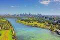

Multimédia
Fotografias, vídeos e poesia sobre Melbourne.
Fotografias

Vídeo
Poesia
No sul do mundo, onde o mapa se inclina,
corre o Yarra manso até à baía,
e a cidade acorda em luz que hesita
entre o sol de verão e a chuva fria.
Ruas de arte escondidas em becos,
elétricos a cortar o vento leve,
quatro estações cabem num só dia,
e ninguém sabe o tempo que se segue.
Do outro lado do globo, longe de casa,
Melbourne guarda um céu que não se cansa
de mudar — como quem também procura
um lugar seu nesta terra tão vasta.

Melbourne, uma cidade para descobrir.
Uma cidade em movimento.
Entre o rio e a cidade.
Continua a descer para observar o efeito parallax.